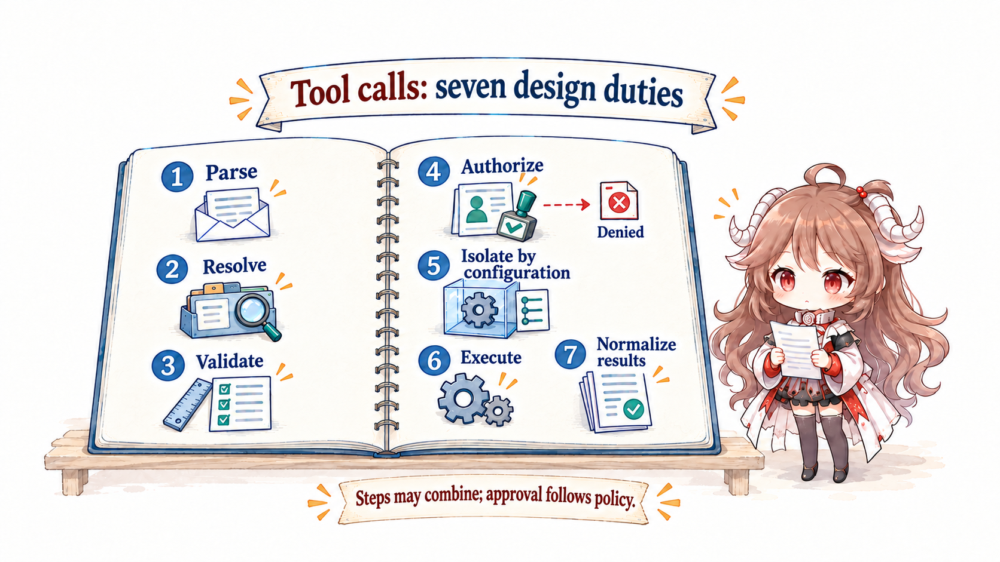
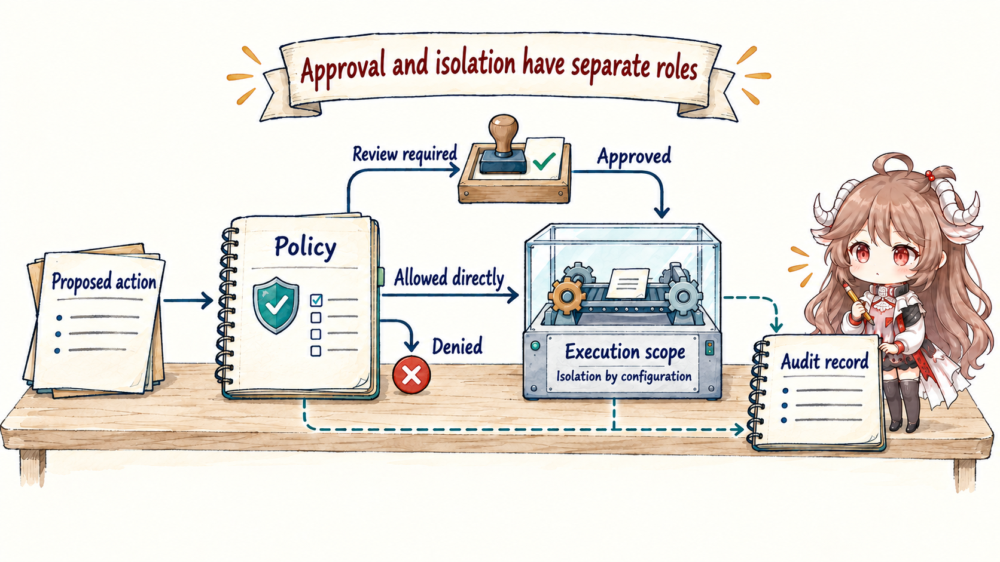

After this article: you should be able to trace a proposed tool call into a controlled action and explain the roles of tools, permission, sandbox, state, recovery, and observation.
Terminology note: vendors use “harness” at slightly different widths. This series uses it for the execution environment and controls outside the model but inside one run. The repeated control flow is introduced separately as the Agent Loop.
1. See how a proposal becomes a real action
1.1 First understand what a harness does
A harness is the software environment that lets a model use tools under explicit rules. It prepares the request, exposes available tools, checks arguments and permissions, runs actions in a limited environment, records what happened, and returns observations to the model.
Think of a workshop. The model is the worker deciding what to try. The harness supplies labeled tools, a protected workbench, safety rules, a logbook, and a way to resume after interruption. A more capable worker does not remove the need for the workshop.
1.2 Follow “run the payment tests” from words to evidence
When the model proposes a test command, the surrounding system has to complete a concrete sequence:
- Find the real test tool and its current interface.
- Check that the arguments are complete and valid.
- Decide whether this Agent may use it for this repository.
- Limit which files, processes, network locations, and credentials it can reach.
- Run the command with timeout and cancellation controls.
- Store large logs and return a useful result.
- Record enough state to explain or recover the action later.
If step 2 is missing, malformed input reaches the executor. If step 3 is missing, a prompt warning becomes the only permission boundary. If step 6 is missing, a huge log floods the next model request. Harness engineering is the design of this whole path, not merely a wrapper around an API call.
Put this Tool Call back into a complete run and a repeating chain appears: the harness prepares a request → the model proposes an action → the harness checks and executes it → the result becomes an observation → the observation enters the next request → the model decides again. The harness carries each action; the Agent Loop decides whether the chain needs another round.
2. Separate the parts of the action environment
2.1 Gather the seven steps into one runtime environment
Models are good at proposing plans under uncertainty. The runtime must contain uncertainty inside deterministic boundaries. Which tools are visible to the current role, whether arguments satisfy a schema, which paths are writable, which network destinations exist, and how results are serialized belong to policy and code—not to an improvised model decision.
A minimal harness only needs to prepare a request, expose tools, validate input and permission, execute within limits, and return results. A mature system adds a versioned tool registry, event records, progress observation, artifacts, and checkpoints for reproducibility and recovery. The table below puts both layers together for engineering review.

| Control surface | Facts it owns | Why the model cannot own them |
|---|---|---|
| Request assembler | Model, instructions, tools, context view, budgets | Requests must be reproducible and observable |
| Tool registry | Name, schema, capability, version, result type | The model cannot invent real interfaces |
| Policy / permission | Allow, deny, ask, and scope | Safety boundaries need determinism |
| Sandbox / executor | Files, processes, network, and resource limits | Prompt text cannot isolate effects |
| State / transcript | Run state, events, result references, checkpoints | Recovery and audit need durable facts |
| Observer / verifier | Progress, metrics, and execution evidence | Self-report cannot be the only truth |
The harness records and exposes evidence. The agent loop decides whether this run should continue; evals decide whether evidence proves outcome quality across tasks and versions. A verifier may run inside the harness without owning product truth.
2.2 Pass one tool call through seven gates
A tool call is structured model output: a proposal. A robust harness does not map it directly to a function. It separates interpretation, authority, execution, and observation.

- Parse: confirm the call is complete and belongs to the current request.
- Resolve: find the exact tool version in the current visible registry.
- Validate: check types, ranges, exclusions, and required fields.
- Authorize: combine actor, resource, action, and environment into allow / deny / ask.
- Isolate: create filesystem, process, network, and credential boundaries.
- Execute: manage timeout, cancellation, concurrency, retries, and idempotency keys.
- Normalize: turn stdout, structured results, errors, and artifacts into a stable observation.
async function dispatch(call, run) {
const tool = registry.resolve(call.name, run.toolsetVersion)
if (!tool) return observe("unknown_tool", call.id)
const args = tool.schema.parse(call.arguments)
const decision = policy.decide(run.actor, tool.capability, args)
if (decision === "deny") return observe("denied", call.id)
if (decision === "ask") return pauseForApproval(run, call)
const box = await sandbox.open(tool.limits)
events.append("tool.started", { runId: run.id, callId: call.id })
try {
const raw = await executor.run(tool, args, { sandbox: box })
return normalize(raw, artifactStore)
} finally {
await box.close()
}
}while loop. Calling the model again belongs to the agent loop in Part 5.{
"call_id": "call_42",
"tool": "run_tests@3",
"arguments": { "target": "./payment", "mode": "read-write" },
"policy": { "decision": "allow", "rule": "repo-test" },
"sandbox": { "fs": "workspace", "network": "off", "timeout_s": 120 },
"result": { "status": "failed", "exit_code": 1, "artifact_ref": "log://9f2" }
}2.3 Tool design shapes what the Agent can do
Part 2 covered the tool description the model sees and how it should choose. This part owns the registry, version, schema validator, authorization, dispatcher, and artifacts that decide whether execution can actually happen. More tools are not automatically better: overlapping write tools, a universal shell, and vague free-text arguments expand the action space and force the model to guess.
2.3.1 A good tool serves the model and the runtime
| Dimension | Model interface | Runtime interface |
|---|---|---|
| Semantics | When to call and when not to | Capability id and version |
| Input | Few, clear fields | Strict schema and normalization |
| Output | Enough to choose the next step | Typed result, artifact, and error class |
| Effect | What will change | Permission, idempotency, compensation, audit |
| Cost | When the call is worth making | Timeout, rate, token, and resource budgets |
Do not dump large output back into context. Store full logs as artifacts and return a summary, critical errors, and a reference that can be paged later. This improves both context budget and recovery.
2.4 Permission to act is not permission to reach everything
Permission answers whether this actor may perform this action. The sandbox answers what the allowed action can actually reach. Permission to run tests does not imply access to the home directory. Permission to read a repository does not imply permission to transmit it to arbitrary network destinations. Both layers are required.

- Capability scope: do not expose irrelevant tools to the model.
- Policy decision: match actor, action, resource, and environment.
- Human approval: pause only at high-risk or ambiguous boundaries and show an understandable diff.
- Sandbox: limit blast radius with filesystem, network, process, and credential isolation.
- Audit: record who proposed the effect, which rule allowed it, and what actually occurred.
3. Advanced: make real actions recoverable and traceable
3.1 After interruption, chat history alone cannot recover the work
Anthropic’s Managed agents treats a session as a stateful environment around the model, harness, and sandbox. Engineering still needs to distinguish UI conversation, model-visible messages, append-only events, external artifacts, checkpoints, and environment snapshots. They have different lifetimes and recovery roles.
Restarting by sending old chat back to a model is unsafe. The runtime must know which tool calls actually executed, which were in flight, how the workspace changed, whether approvals remain valid, and which external objects already exist. Deterministic records recover effects; the model should not infer them from prose.
tool.proposed → tool.validated → policy.allowed → tool.started
→ runtime.crashed → run.recovered → effect.reconciled
→ observation.readycall_42 has started but not completed, the runtime first queries the environment. A read-only call may be replayed under limits; an idempotent write is reconciled first; a non-idempotent write with unknown state must block or escalate rather than execute again.3.2 Both the user and the system need to see what happened
A final response and total token count are not enough to debug a harness. A run trace needs request assembly, model events, tool proposal, policy decision, sandbox execution, observation, checkpoint, and exit reason. Sensitive bodies can be redacted; control events cannot disappear.
- Stable run, turn, and call ids join every event.
- Record tool latency, queue time, retry, cancellation, and artifact size.
- Separate model error, tool error, policy denial, environment failure, and user cancellation.
- Retain the exit reason and unfinished work so the outer loop can decide safely.
4. Review the harness with six questions
| Review question | If unanswered | Risk |
|---|---|---|
| Which capabilities can the model see now? | No versioned registry | Capability drift and wrong selection |
| Where are tool calls validated deterministically? | The model self-checks | Invalid arguments reach effects |
| Who owns authorization and isolation? | Only prompt warnings exist | Unbounded blast radius |
| How are large results and secrets handled? | Everything returns to context | Disclosure and window pollution |
| Which facts recover an interrupted process? | Only chat is replayed | Duplicate effects and false state |
| Does every exit have a machine-readable reason? | Only final prose exists | The outer loop cannot take over safely |
The harness turns “the model can think of it” into “the system can do it safely.” Next we enter the control flow that keeps advancing inside it: how an agent loop makes one run converge correctly.
Official sources
- OpenAI: Harness engineering
- OpenAI: Unrolling the Codex agent loop
- Anthropic: Building and evaluating trustworthy agents
- Anthropic: Managed agents
- Anthropic: Harness design for long-running applications